Во́роны в природе
Ворон — самый крупный представитель отряда воробьиных и одна из самых «умных» птиц мировой фауны.
Практически на всей территории своего обширного ареала ворон обычный, но не многочисленный вид. По международному статусу он относится к видам, существование которых вызывает наименьшие опасения. Специальных мер охраны не требует.
Ворон — очень осторожная птица, обычно близко к себе не подпускает.
Красивый, свободный полет ворона больше похож на полет хищной птицы, чем на полет других врановых, птица может долго парить, а также выполнять в воздухе сложные фигуры, особенно во время парных воздушных токов. Во время быстрого полета перья издают характерный звон.
Ворон хорошо передвигается и по земле, и прежде чем взлететь, делает несколько прыжков по земле, как бы разбегаясь.
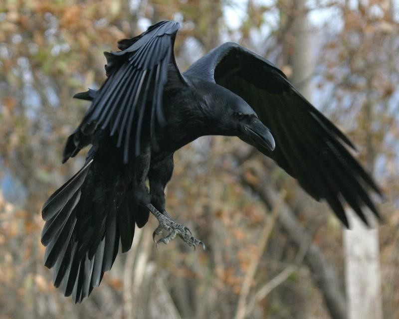
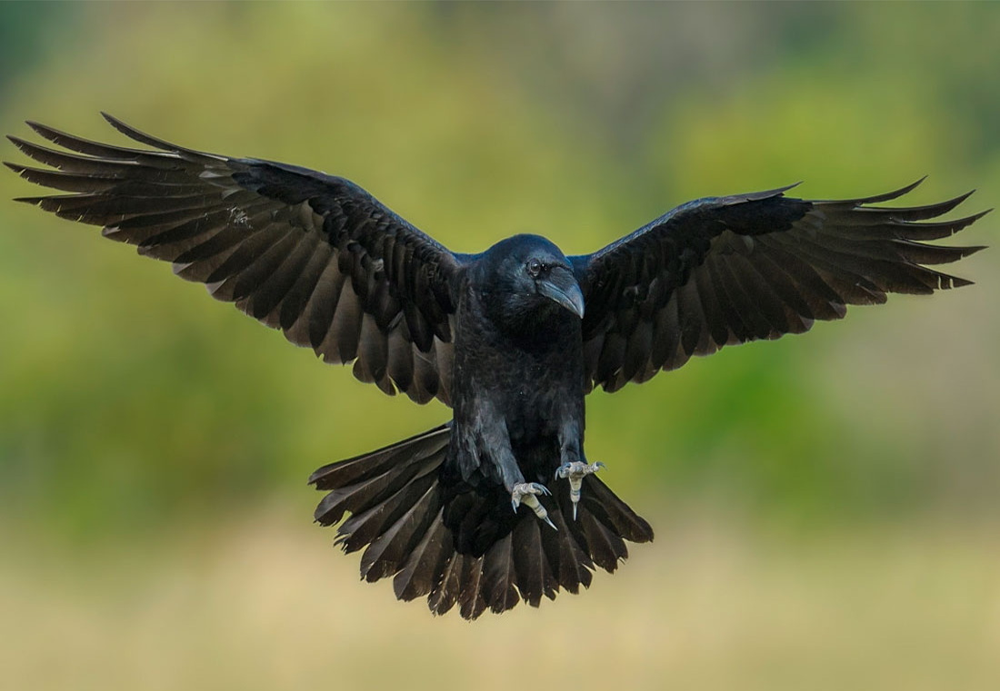
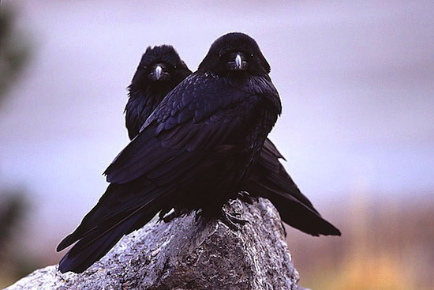
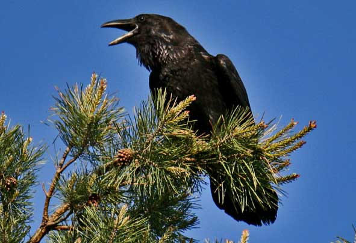
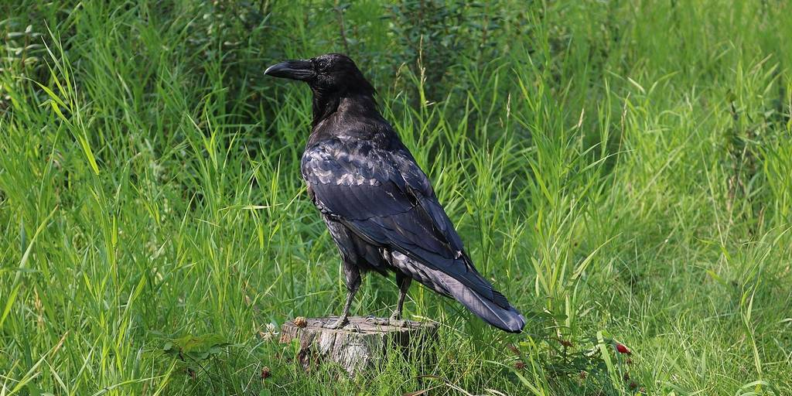
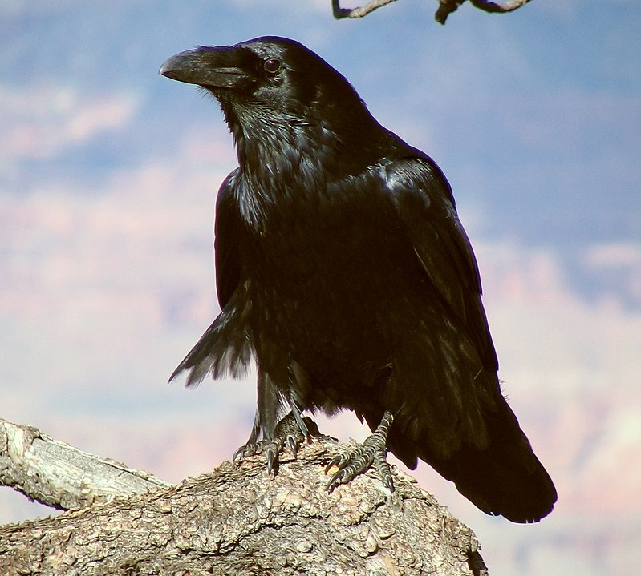
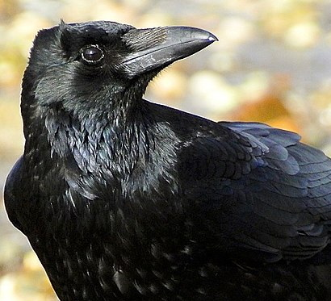
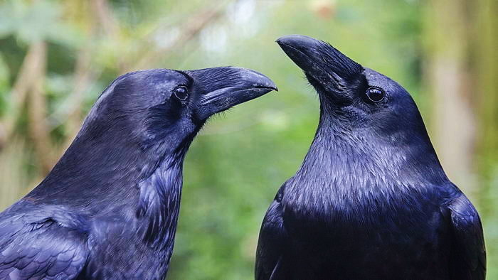
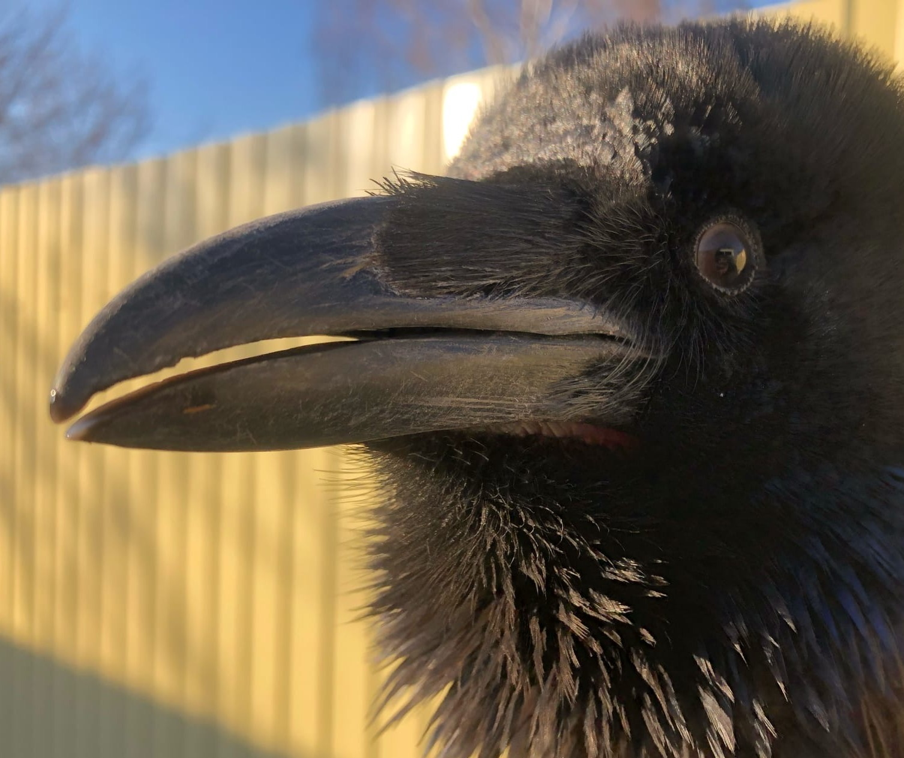
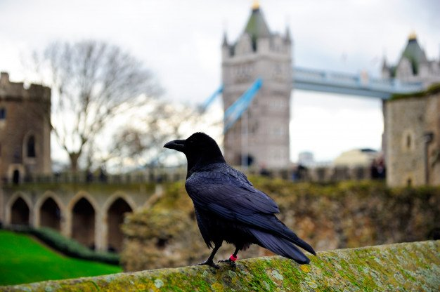
Во́роны в искусстве и культуре
В мировой литературе и культуре существует множество отсылок о во́ронах. Большинство упоминаний связаны с внешним видом и поведением обыкновенного ворона (Corvus corax). Из-за своего черного оперения, карканья и рациона, приемущественно состоящего из падали, ворон часто ассоциируется с утратами и дурными предзнаменованиями. Тем не менее, символизм упоминания ворона сложен. Как говорящая птица, ворон также олицетворяет пророчество и прозрение. Во́роны в литературе часто выступают в роли психопроводников, связывая материальный мир с миром духов.
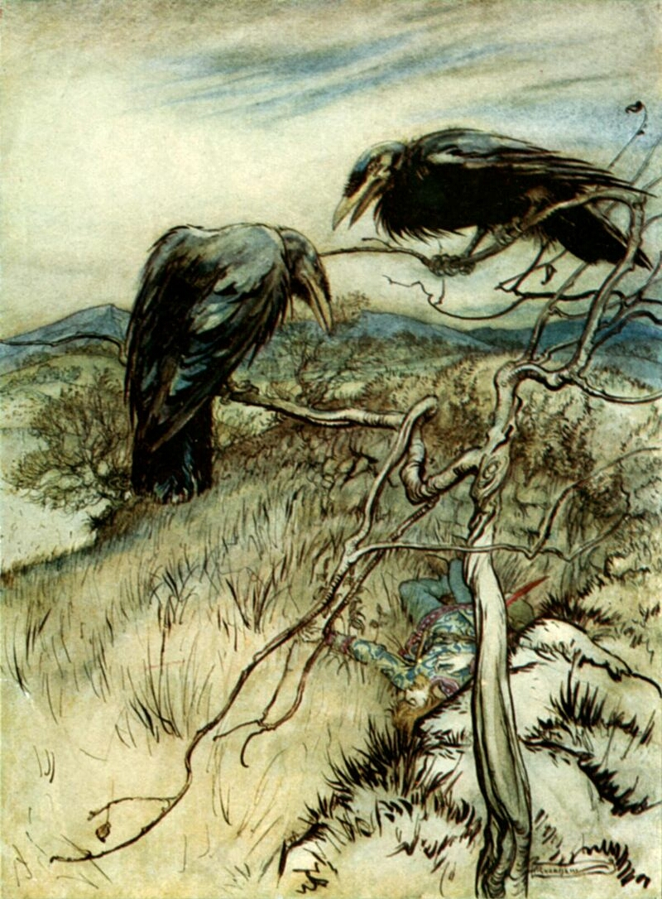
Шотландская народная баллада "Два ворона" из собрания Сэра Вальтера Скотта, перевод с франц. А.С. Пушкин
Ворон к ворону летит,
Ворон ворону кричит:
«Ворон, где б нам отобедать?
Как бы нам о том проведать?»
Ворон ворону в ответ:
«Знаю, будет нам обед;
В чистом поле под ракитой
Богатырь лежит убитый.
Кем убит и отчего,
Знает сокол лишь его,
Да кобылка вороная,
Да хозяйка молодая».
Сокол в рощу улетел,
На кобылку недруг сел,
А хозяйка ждет мило́го,
Не убитого, живого.
1828
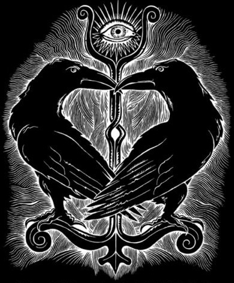
Согласно «Старшей Эдде» (песнь «Речи Гримнира») у Одина помимо двух волков (Гери и Фреки) есть два ворона, которых зовут Хугин и Мунин. Их имена в переводе с древнеисландского означают «думающий» (Huginn) и «помнящий» (Muninn). Также существует альтернативный перевод имен Хугина и Мунина, по этой версии вороны Одина называются «мысль» и «память».
Хугин и Мунин упоминаются не только в Старшей и Младшей Эддах, но и во многих других средневековых памятниках скальдической поэзии. Также о воронах Одина Хугине и Мунине говорят авторы «Круга Земного» (Снорри Стурлусон) и «Третьего грамматического трактата» (Олав Тордарсон).
С точки зрения «функциональности» вороны Хугин и Мунин представляют собой достаточно любопытные мифологические образы. В песни «Речи Гримнира» Один говорит о том, что Хугин и Мунин располагаются у него на плечах. Каждое утро Всеотец отправляет птиц странствовать по Девяти Мирам (не только по Мидгарду), и каждый вечер они возвращаются, чтобы поведать великому асу о том, что творится во Вселенной. Это не посланники богов, как полагали ранние исследователи скандинавских мифов. Вороны Хугин и Мунин не показываются ни людям, ни етунам, они лишь наблюдают, слушают и запоминают, это, образно выражаясь, личные «шпионы» Одина, которые собирают для него необходимую информацию.
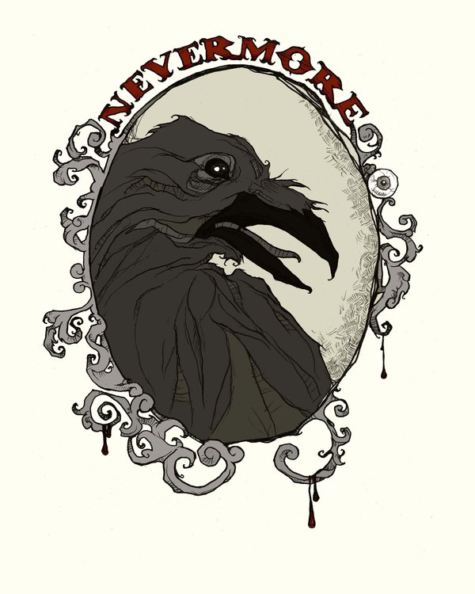
Отрывок из стихотворения "Ворон" Эдгара Алана По. В переводе К. Бальмонта.
...
Я толкнул окно с решёткой, — тотчас важною походкой
Из-за ставней вышел Ворон, гордый Ворон старых дней,
Не склонился он учтиво, но, как лорд, вошёл спесиво,
И, взмахнув крылом лениво, в пышной важности своей,
Он взлетел на бюст Паллады, что над дверью был моей,
Он взлетел — и сел над ней.
От печали я очнулся и невольно усмехнулся,
Видя важность этой птицы, жившей долгие года.
«Твой хохол ощипан славно и глядишь ты презабавно»,
Я промолвил, «но скажи мне: в царстве тьмы, где ночь всегда,
Как ты звался, гордый Ворон, там, где ночь царит всегда!»
Молвил Ворон: «Никогда».
Птица ясно отвечала, и хоть смысла было мало,
Подивился я всем сердцем на ответ её тогда.
Да и кто не подивится, кто с такой мечтой сроднится,
Кто поверить согласится, чтобы где-нибудь когда —
Сел над дверью — говорящий без запинки, без труда —
Ворон с кличкой: «Никогда».
...
1845
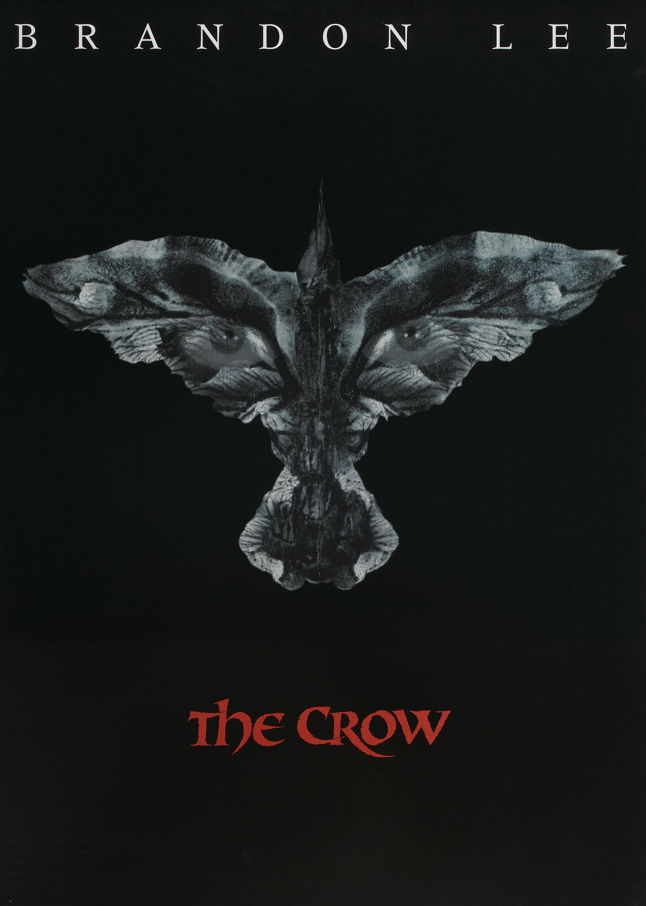
Фильм "Ворон"
Четверо бандитов убивают Эрика и его возлюбленную Шелли. По прошествии года ворон возвращает Эрика к жизни, чтобы он смог отомстить негодяям.
Год производства: 1994
Страна: США
Жанр: фэнтези, боевик, драма
Слоган: «Darker than the bat»
Режиссер: Алекс Пройас
В ролях: Брэндон Ли, Рошелль Дэвис, Эрни Хадсон, Майкл Уинкотт, Бай Лин
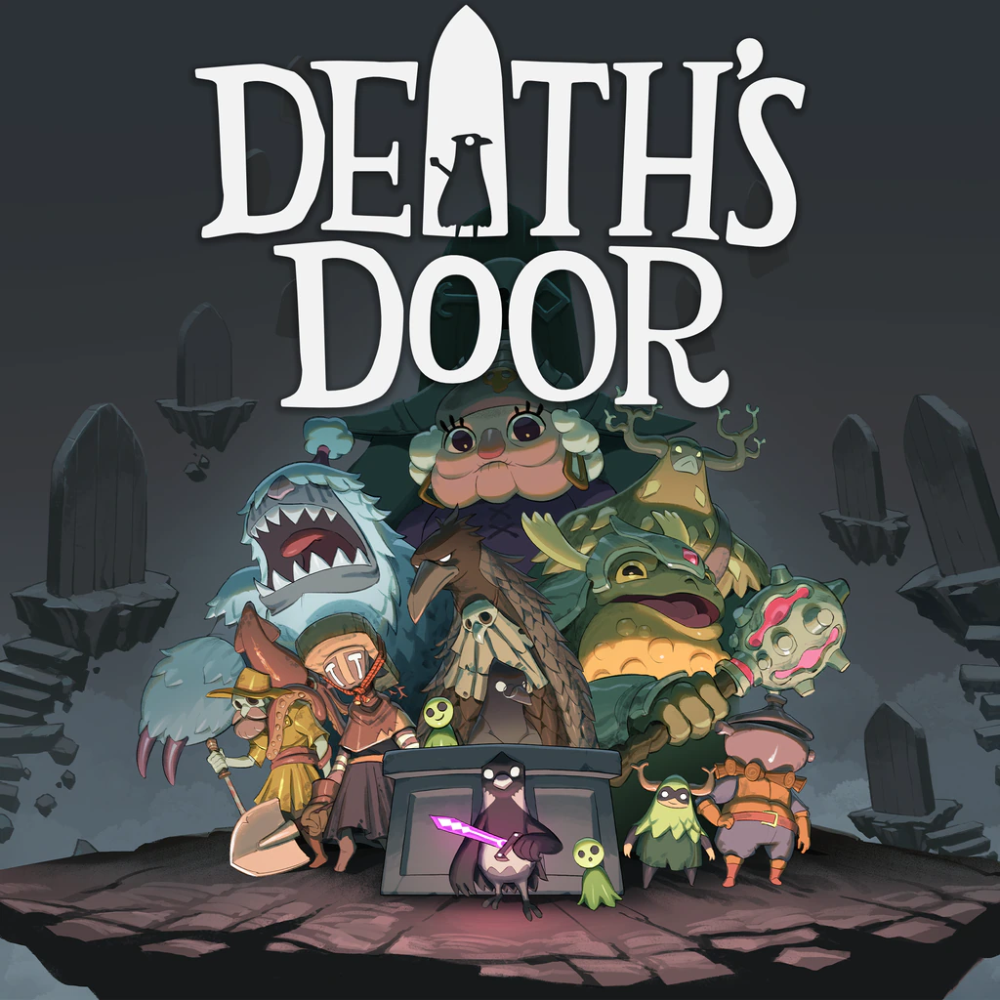
В игре "Death's Door" игрок берет на себя роль маленького ворона, который работает "жнецом", собирая души умерших для "Штаб-квартиры Комиссии по Жатве".
Издатель: Devolver Digital
Разработчик: Acid Nerve
Дата выхода: 23.11.2021
Количество игроков: 1
Платформы: PS5, PS4, Windows 10, Xbox One, Switch
Жанр:ActionAdventure
Возрастной рейтинг: 16+
Вороны на облжках книг
Из-за исторически сложившейся связи воронов с чем-то потусторонним и мистическим, писатели часто упоминают эту птицу в названиях своих произведений и помещают ее изображение на обложку
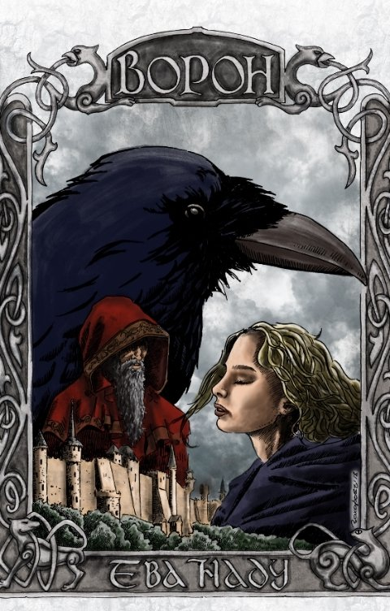
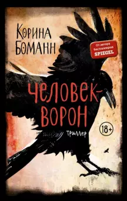
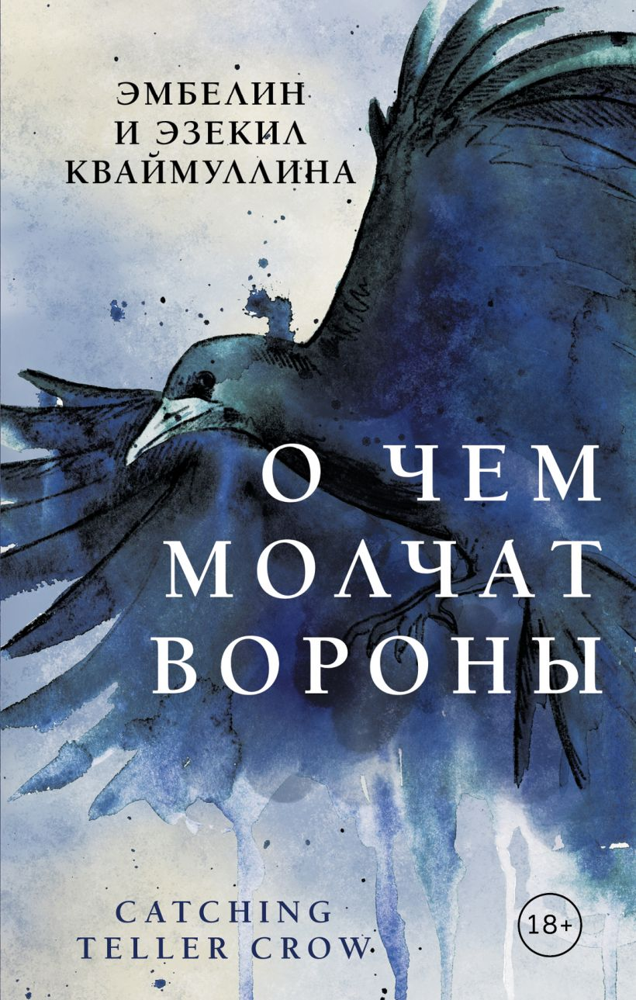
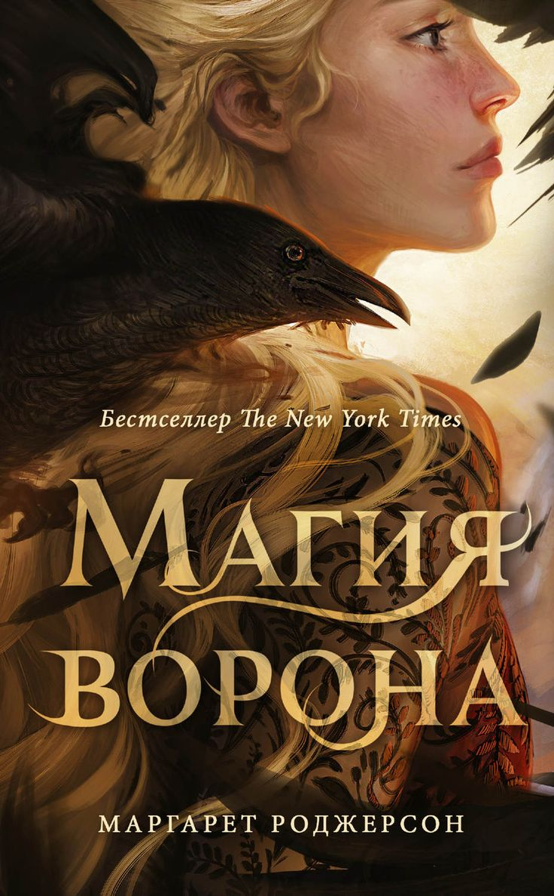
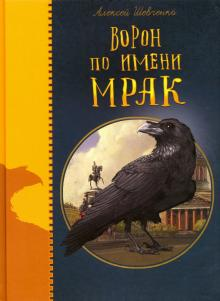
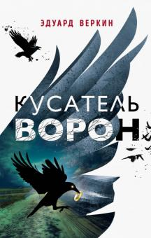
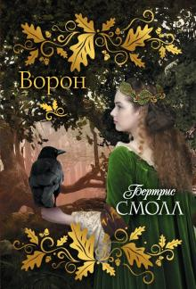
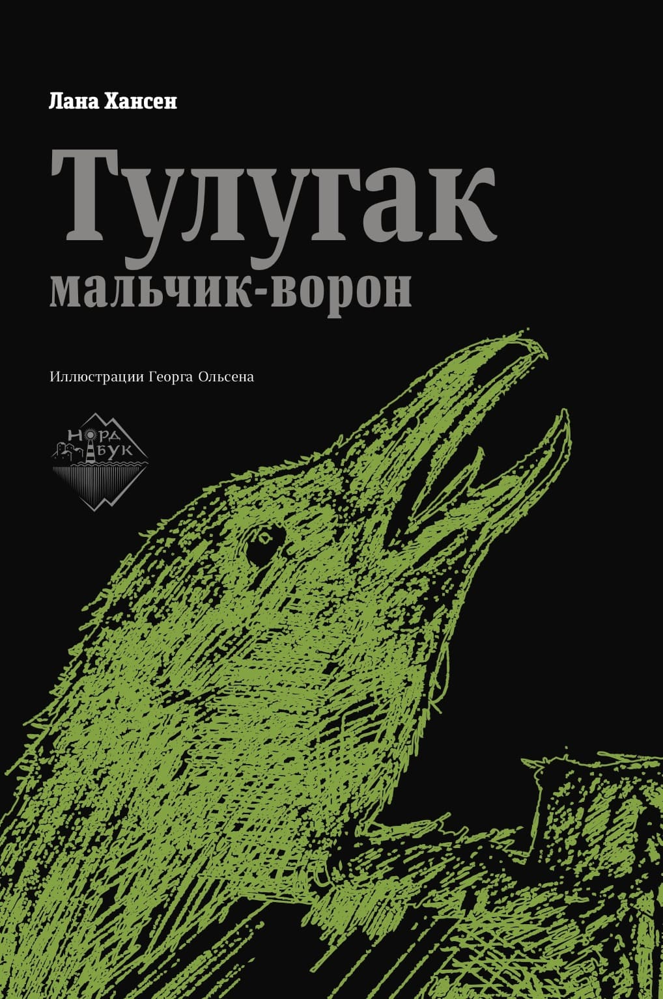